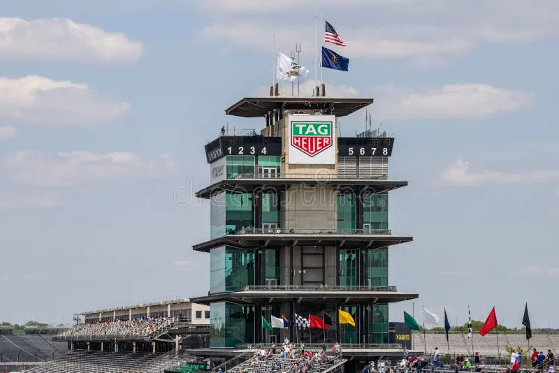
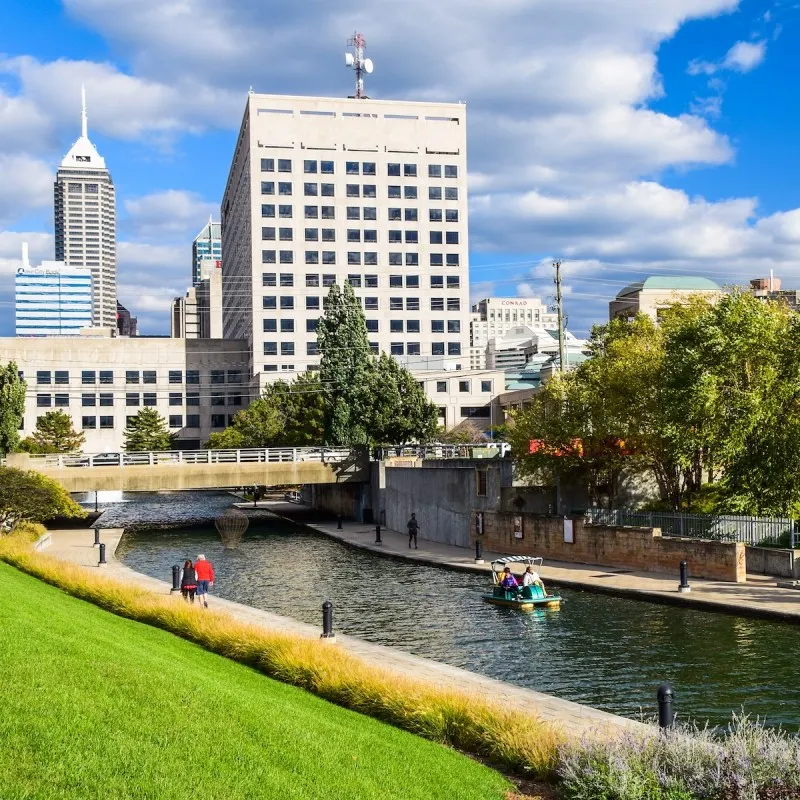

One of the more popular F1 tacks resides here often taking place in may
There is also a river that people can walk around and rent out boats or 4 person bikes
Lastly people are able to climb up the soilder and sailors monument, having a total of 331 steps
"I have lived at Indianapolis for over 20 years, so I can show you all of its best parts and hidden secrets."